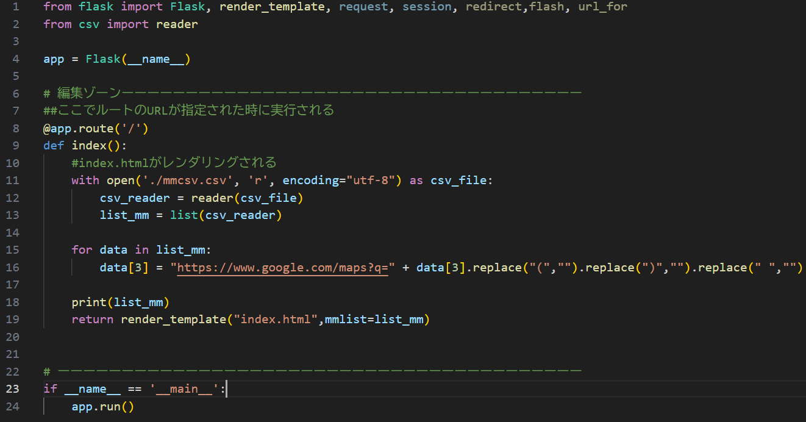
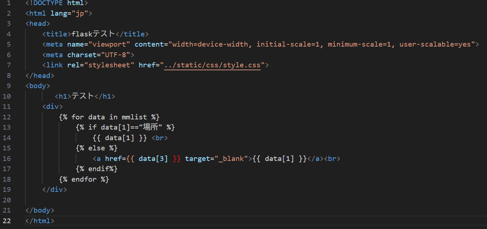

第3回
Flaskとは
Pythonで書かれた、軽量で拡張性の高いWebアプリケーションフレームワーク。
マイクロフレームワークと呼ばれ、必要最低限の機能のみが搭載されている。
シンプルで、自由度が高いことが特徴。
PythonのデータをHTMLに送って表示をするという仕組み。
CSVの情報を表示してみる
CSVファイルの内容を読み込み、リンク付きでブラウザに表示するということをやりました。
Python

・CSVファイルを読み込む
・各データの４列目(data[3])を、Googleマップのリンクに変換
・リストをmmlistとしてHTMLに渡す
HTML

・mmlistを1行ずつ処理
・data[1]が場所の時は、文字として表示
・それ以外は、data[1]を表示テキストにし、data[3]へのURLのリンクを表示
振り返り
Flaskは非常にシンプルなフレームワークということもあり、説明と一緒に見ていくとなんとなくですが理解することができました。
Webサーバーの立ち上げと聞くと長いコードを書き込まなければいけないと思っていましたが、
Flaskを使うことにより短いコードでもWebサーバーを立ち上げられるのは凄いと思いました。